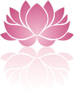

Facial reflexology and facelift massage
Facial Reflexology is a delightful treatment that can improve skin tone, and help the face both feel and look smoother and younger with a healthy glow.
Stimulating reflex points on the face using a thumb or finger will improve circulation and muscle tone, as well as encouraging the release of toxins from the body. It is a deeply relaxing treatment that aims to stimulate the body’s own healing mechanism.
Facial Reflexology works on the same principles as foot Reflexology, and the treatment is based on the theory that different areas on the face correspond to areas within the body. The aim of foot and facial Reflexology is to promote healing and help balance the whole body so that it can function at an optimal level. Facial Reflexology is such an effective treatment due to the closeness of the face to the brain and cranial nerves, and this will also have an effect on all body systems.
Facial reflexology is usually combined with facelift massage to form one rejuvenating treatment. These two techniques offer a gentle non-invasive approach to looking younger. Together, they provide a unique holistic therapy aiming to smooth, tighten and beautify the face and neck.
In addition to stimulating the body’s healing energy, these two lovely therapies can help people feel and look relaxed, younger and more radiant.
Because it is a holistic treatment it can help to ease the symptoms of many common ailments including anxiety and stress, hormonal and menstrual imbalances, sleeping problems and digestive disorders such as IBS to name but a few.
The unique Bergman method that I trained in is based on a combination of Asian body maps that chart reflex points, and Native American techniques. See www.zonefacelift.com
